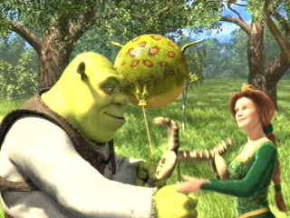

| Shrek
(SE)/A,B+ |
| Dreamworks/2001/93/ANA
1.85 |
Shrek is a wonder of twisted
imagination brought to animated screen life with enough sophistication
to turn rival studio heads green with envy. Turning fairy tale elements
upside down and inside out, the creators of Shrek have adorned
their script brilliant animation, savvy casting and a hip score. It's
can't miss entertainment aimed adeptly at both adult and kid
audiences.
 |
| Romance
is in the air. ©Dreamworks |
Conventions are accepted and upended with
precise alacrity from the opening sequence of a traditionally crafted
fairy tale book being read and turned page by page. What a surprise when
we discover that Shrek, an ogre of the first order, is the
reader. Shrek's utter repugnance is crafted with graceful
animation strokes.
The ogre lives in a swamp on the edge of Duloc ruled
by the height deprived Lord Farquaad. When Farquaad begins an odious
purification of Duloc by banishing all traditional fairy tale creatures,
they wind up cowering for shelter in the dark swamplands. With his
privacy disturbed, Shrek becomes embroiled in Lord Farquaad's
quest for a legitimate crown. It seems that Farquaad's magic mirror has
suggested imprisoned princess Fiona as Farquaad's bride to legitimize
the title of king for himself. Shrek inadvertently upends
Farquaad's tournament to choose a champion to free Princess Fiona from
her tower perch in a faraway castle guarded by a fiery dragon. Shrek
agrees to champion Farquaad's quest with the understanding
that Farquaad will return the fairy tale creatures to Duloc thereby
liberating the ogre's fetid domain. Accompanied by an itinerant talking
Donkey, the ogre sets out to free the princess.
At the castle, Shrek and Donkey must
face the challenge of the dragon and make a hasty exit with Fiona. The
princess has some firm ideas of what protocols should be observed
in saving her. On the return to Duloc, Shrek and the princess are
in for some emotional surprises. Donkey adds some lively patter to the
return journey and a surprise breakfast and a starlit barbeque add to
the charming adventure, not to mention a hilarious encounter with
another famous character.
The wedding bells are poised to chime when Fiona
arrives in Duloc. Shrek returns to the swamp under a cloud of
disenchantment and it's up to Donkey to make sure that this fairy tale
ends within the bounds of fairy tale tradition.
The animation is uniformly fabulous. The creatures
move with robust cartoon reality. The art concepts are likewise
terrific. Directors Andrew Adamson and Vicky Jenson have put together
the elements in grand style. The film works on virtually every level. Shrek
is sure to enchant you with its unique spell.
Shrek is voiced by Mike Myers with more than a touch
of his Fat Bastard character from Austin Powers: The Spy Who Shagged
Me. Myers manages impatience and charm, crudity and sensibility with
surprising ease. Eddie Murphy swings his sassy backside with irreverent
poise as Donkey. Fiona gets a feisty independent voicing from Cameron
Diaz and Farquaad is intoned by John Lithgow.
For an animated film, Shrek features
a huge range of lighting schemes. The DVD handles them in smart effective
fashion rendering subtle shading and shadows with lifelike dimension.
Part of Shrek's animated success is shading incorporated into all
of the character movements and the DVD duplicates it reverently. Color
is meticulously controlled. Shrek's ugly green skin never bleeds onto
blue sky backgrounds. Depth is often remarkable. Even something as
inconsequential as Farquaad's proclamation displays amazing depth of
detail in the texture of the material and the blue F positively jumps
off the sheepskin scroll. Resolution is hilly trip. The ups are segments
when the animation is transferred with splendid resolve, but
unfortunately the soft focus downs prevent Shrek from reaching
reference heights. The Dreamworks package provides a choice between DTS
and Dolby Digital sound. The DTS version is bravura sonic
recording. The bass is controlled to magical effect. The impact of
the dragon's wings moving air is incredible. Ambience is created with
precise location of sounds, yet an airy feeling maintained.
The 2 DVD special edition includes extras of Shrekian
proportion. With a smattering of information on every aspect of
production, there's little you can't learn about Shrek. Disc one
includes an HBO making of featurette plus some charming short character
interviews. There are also a couple of simplistic games. The
hilariously energetic Shrek
short is included on both discs. Disc 2 includes audio commentary from
directors Vicky Jenson and Andrew Adamson and producer Aron Warner.
There's a story board presentation, a 22 minute featurette The Tech of
Shrek, a small section of Technical Goofs, and an insubstantial
dubbing featurette. The evolution of the main character animation is
presented in a Progression Reel.
|
|
|
|

Selections from the Feature Archive include articles on
Akira Kurosawa, Frank
Darabont, Blonde Bimbos, Hollywood Street Gangs, or Vietnam: The
Hollywood Pariah, and many more....
Sturges Emerges

Preston Sturges was Hollywood's resident comic genius for more than a decade. His movies are
timeless. Click on his image to read all about it.

The
Movie Poster Archive includes extensive poster images from the films of stars like Susan Hayward,
Kirk Douglas, Katharine Hepburn and many more. Our featured star is Cary
Grant.

The Adventures of
Baron Munchausen/A,A-

Director Terry Gilliam's richly detailed interpretation of the outlandishly
imagined and fabricated exploits of the legendary eighteenth-century German adventurer and
storyteller.

Click on the DVD MIA symbol for
profiles of DVDs missing in action.
Add films to the DVD MIA Master List by filling out
a simple form. Click Here


The Cinema Laser
A home grown magazine for laserphiles that has been publishing for a number of years and has
embraced DVD in a big way. Lots of helpful information.

DVD links, information about Web specials, news, Site reviews.
 ETEKNet is the web's only 24-hour, totally FREE source for all your home theater,
DVD, Dreamcast, PC, and Networking tech support needs! ETEKNet is the web's only 24-hour, totally FREE source for all your home theater,
DVD, Dreamcast, PC, and Networking tech support needs!
Avid-Collector Posters

Great selection of big foreign paper, plus the home of J. Fields linen
service.

Great site for DVD followers. Lots of
information, some speculation, opinion, and reviews all bundled in a sparkling interface.
|